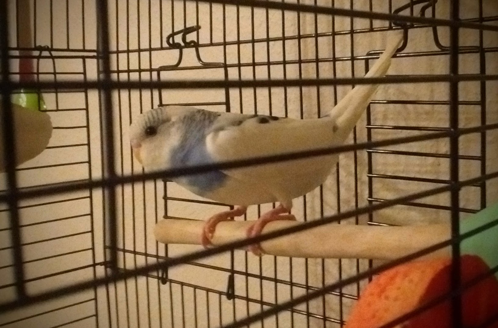
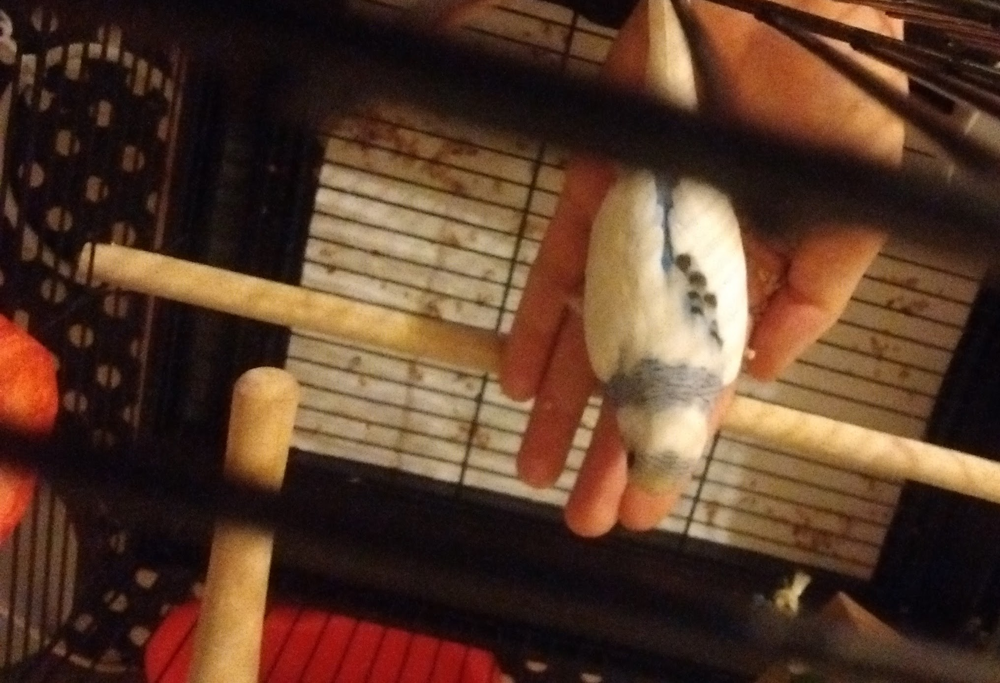

Building Trust
The first two weeks of living with Apollo were all about building trust. For the most part I followed the method outlined in this vet approved guide: www.wikihow.com/Tame-Your-Budgies.
Apollo seemed pretty stressed for the first few days after I brought him home. He was breathing rapidly, shaking a bit, and was pretty much silent for the first day or two.

When I first put him in his cage I had left it with only the bare necessities: a couple wood perches, a cuttlebone, a mineral block, and his food and water. I didn’t want to overwhelm him with new things right away, and I wanted him to discover the things that would always be available to him before anything else. It was a pretty boring setup though, so on day two I rearranged the perches a little bit and introduced a foraging toy. He freaked out a little bit when I put my hand in the cage, but after fluttering around for a few seconds he was content to just stay still, away from where I was causing the commotion.
It only took a few days to build some trust with my little bird. I didn’t force it, but I did stare at him a lot those first few days, talking to him, and putting my hand in the cage to rearrange things and get him used to me, without trying to touch him or get too close. After a few days I started putting a little pile of seeds in the palm of my hand and offering them to him. I didn’t shove my hand in his face or anything, I just held my hand near enough that he could reach the seeds from his perch and waited for him to come to me. I can’t remember which day it was he first took something from my hand, but this photo was taken on his sixth day with me:
